Votion 3DGS · Engineering Blueprint
Phase plan index
Native Windows desktop app: 2D Images, 360 Images, or text → explorable Gaussian splat for Unreal 5.5.
No ComfyUI, no WSL. Code lives at D:\Votion3DGS\.
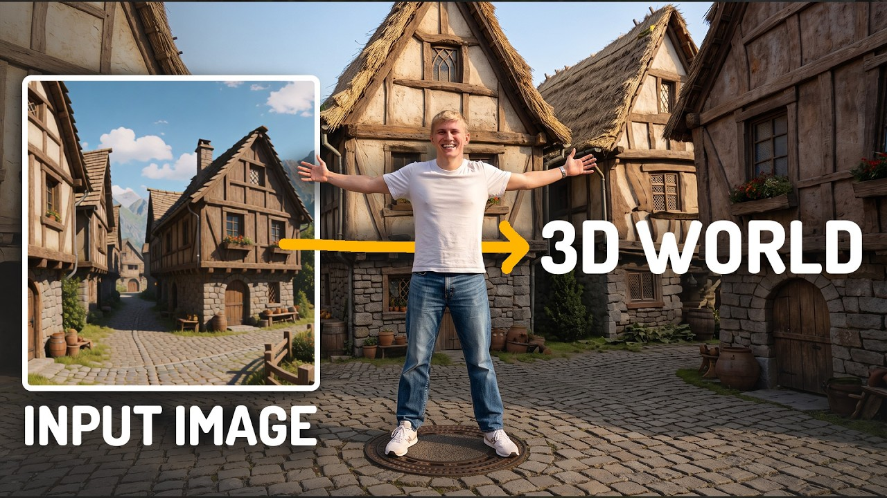
01How to read
Yik Votion WorldFM (Gradio + WSL) is the V1 archive. Do not mix it into V2. Markdown sources sit next to these HTML files. P5 is an appendix here, not its own file.
| Page | Phase | Goal |
|---|---|---|
| Phase 0 | Skeleton | PySide6 window, job bus, venv, model downloader |
| Phase 1 | Pano | 2D Images (default) / 360 Images / text → 8K ERP (pano.png) |
| Phase 2 | First splat | Compute geometry → Plot Camera (1 rail) → SphereSfM → splat.ply (Splat3 or MCMC) |
| Phase 3 | Dataset | 4 rails, WAN then Confirm HiRes, keep/ditch Reconstruct, dual-res SfM |
| Phase 4 | Product | Profiles, installer, Splat3 / MCMC, Open-in-Brush/LichtFeld, UE 5.5 |
02Certainty log
Locked by you in this planning thread. Everything else is either copied from a named source or marked unknown.
- Engine: native Python. No ComfyUI in the product. No WSL.
- Shell: PySide6. Engineering Blueprint look from V1.
- Docs: index + one file per phase (markdown + HTML).
- Code home:
D:\Votion3DGS\. Docs also copied here. - GPU / WAN: RTX 3090 24GB. Quality = WAN 2.1 I2V 14B fp8 720p + LightX2V.
- Weights: copy from ComfyUI if present; else Hugging Face into
<install_root>\models(dev defaultD:\Votion3DGS). - ComfyUI root:
D:\ComfyUI_windows_portable_360 - Venv: independent Python 3.12 + CUDA 12.8 + PyTorch cu128. Do not reuse
python_embeded. - Exact PyTorch patch is not pinned — write
requirements.lockon first Phase 0 install. - Product name: Votion 3DGS
- Trainer: in-app gsplat →
splat.ply. User picks Splat3 (default) or MCMC before Train / Retrain. Splat3 = gsplatDefaultStrategy. MCMC = gsplatMCMCStrategy. Continue keeps the checkpoint’s strategy. ADC is not offered. Brush / LichtFeld / Postshot are “Open in…”. - Unreal: Engine 5.5 + MLSLabsRenderer (interim) for
splat.ply— GitHub · Fab. Update slot held for a future better UE renderer. - Pano inputs: three first-class Phase 1 modes — (1) 2D Images → ERP (default), (2) 360 Images, (3) text → ERP. Happy path is (1) then Phase 2 splat then Phase 3 WAN.
- 2D Images surroundings: type a sentence or local Florence-2 caption (editable). Always append
no peoples, no cars. Empty still blocks Generate. Hub:florence-community/Florence-2-large@4271c66. - Ostris: native port READY (2026-09-03). 2D Images Generate is enabled. Do not shell out to ComfyUI.
- Chrome: V1 left rail + right viewport + six P0 stage chips. A job strip (caption + bar) sits under the chips on every page. Log and Help are matching bottom drawers. Switching chips restores generated views.
- Panorama viewport (2026-09-03): user-draggable split. Left 2:1 ERP: Fit (full picture) or 100% (native pixels + 2D slide). Right = spherical HDRI-style look (yaw + pitch), not a pan-only strip. 2D drop shows a thumbnail.
- h_fov: slider and typed number. Default 70. Range 10–170, step 0.5.
- Upscaler prompt: visible box, default
High resolution photography. Keep it on the 360 Images rail. - Seeds visible: 2D
12345/ seam12345; text322344328372862/ seam8; WAN0. - Geometry viewport (2026-09-03): FLOOR and SIDE sit side by side; Preview flight sits under both. Rail gizmos (path, star 0, red 1–3, look arrows) must be visible. Plates + gizmos are QPainter. Do not ship QWebEngine. vispy is not the Geometry editor.
- Owner / license / audience: Yik (personal); MIT; small private team. No telemetry.
- Installer: Inno Setup. Quality + Fast + Scout all ship on 2.0 day-1. Plot Camera moge_level 9 and HiRes 6 stay different.
- Hub cache (2026-09-02): On Download models, Hugging Face hub + Xet cache is
<install_root>\.hf_cache\(HF_HOME).<install_root>is the folder the user selected in Inno Setup (dev defaultD:\Votion3DGS). Do not write Hub cache toC:\Users\<user>\.cache\huggingface. - Download progress (2026-09-03): During Download models, each Home model-status cell shows its own progress bar (queued empty; the active file shows % from measured bytes). Not log-only.
- Reconstruct viewport (2026-09-03): COLMAP sparse cloud (
points3D.bin+ cameras). Drag orbit, wheel zoom. Not cube-face stills. - Tab persistence (2026-09-03): Switching chips must not wipe generated views. Panorama keeps the 8K ERP (not the green warp). Geometry keeps the last Preview-flight frame and Confirm.
- Job progress (2026-09-03): Every background job drives the strip under the chips. Not log-only. Home per-cell download bars stay.
- Generate dummy PNG (2026-09-04):
ref-hires-mask-split.pngis HTML-only. Product never loads it. - Generate live split (2026-09-04): Left = validity mask. Right = last WAN frame, including low-res. Click a rail number to preview.
- WAN then HiRes (2026-09-04): Generate WAN, review 720p, optionally re-gen a rail, then Confirm WAN → HiRes. HiRes does not auto-start.
- Reconstruct keep/ditch (2026-09-04): Ditch a hallucinated rail (left out of SfM) or Re-gen WAN on that rail.
- Newest sparse (2026-09-04): After Reconstruct finishes loading, always show the newest kept-rail sparse.
Measured on this PC (not guessed)
| Item | Fact | Source |
|---|---|---|
| ComfyUI Python | 3.13 (python313._pth) | D:\ComfyUI_windows_portable_360\python_embeded\python313._pth |
| ComfyUI torch | 2.13.0+cu130 (CUDA 13.0) | torch\version.py |
Required Krea/WAN/LoRA in that models\ | Not present (no .safetensors; no extra_model_paths) | Inventory 2026-08-31 |
| Copy-from-Comfy | No-op until those files appear | Same |
| V1 app | Gradio + WSL2 + WorldFM + train_splat_live.py | Yik Votion WorldFM |
03Pipeline
Phase 1 inputs (three first-class modes)
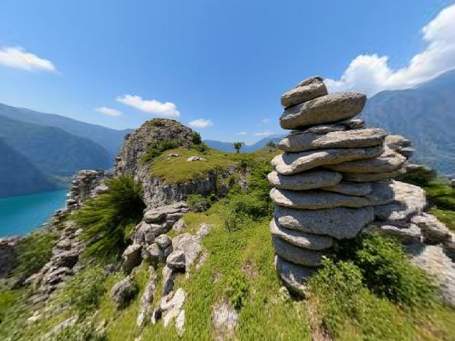
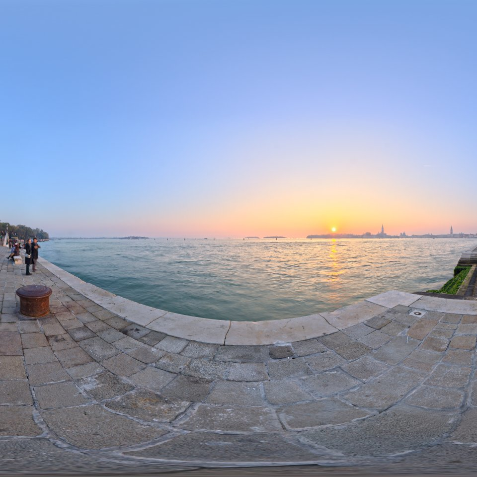

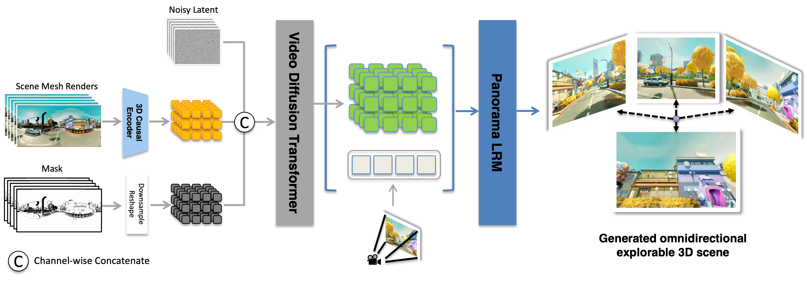
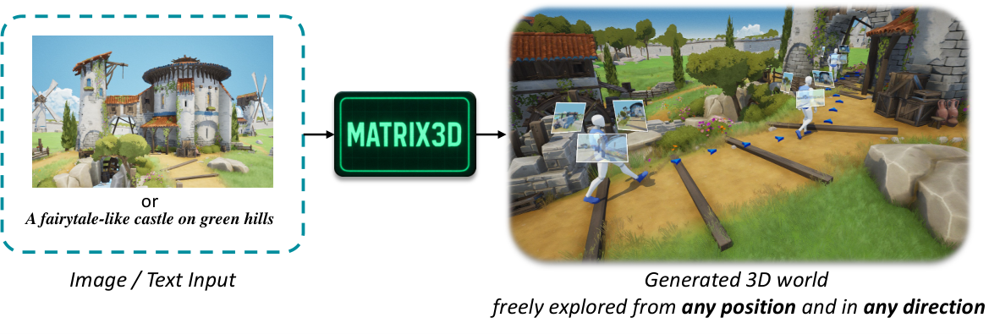
A · P1 pano 2D / 360 / text → 8K ERP B · P2 MoGe Compute geometry + one rail
B · P2 MoGe Compute geometry + one rail
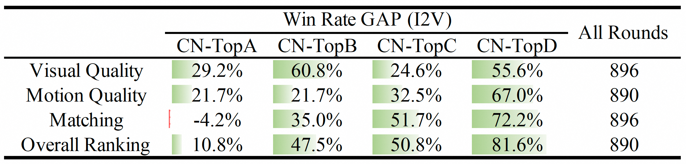
C · P3 WAN 720p hole-fill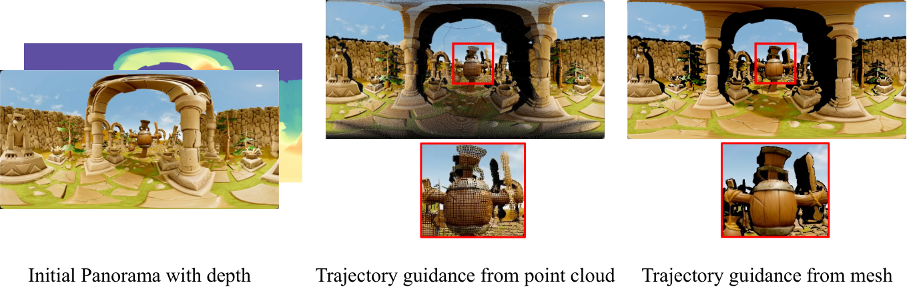
D · HiRes 8K reprojection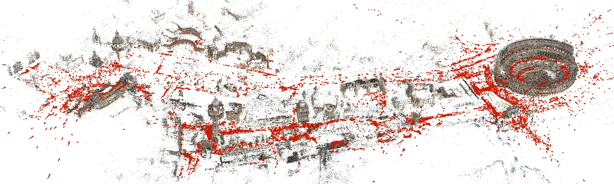
E · SphereSfM COLMAP pinholes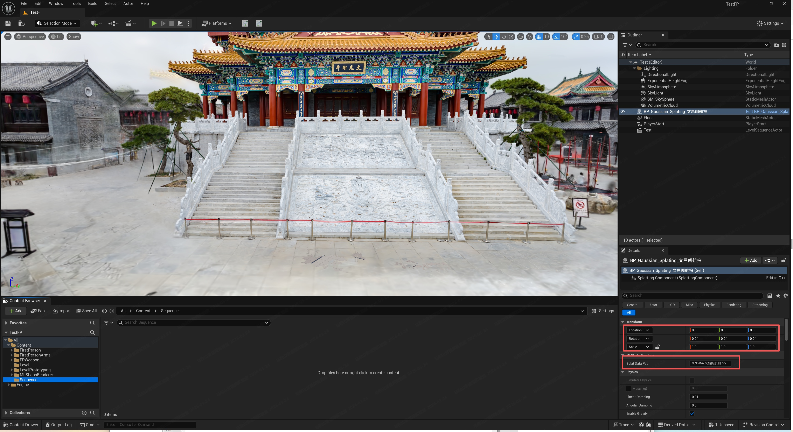
F · Splat Splat3 / MCMC → Unreal 5.5Dummy of the P0 window (V1 left-rail chrome + six P0 page names). Click through P0–P4 for each page.
Votion 3DGS
idleHappy path
2D Images (or 360 / text) → 8K ERP → Compute geometry → rails → Generate → splat.ply (Splat3 or MCMC). Ostris is READY.
Log
No ComfyUI. No WSL. Qt never imports torch for inference.
Help
2D Images (default) or 360 / text → 8K ERP → Compute geometry → rails → Generate → splat.ply (Splat3 or MCMC). Ostris Edit is native READY. h_fov 10–170, type or drag, default 70. Surroundings always end with no peoples, no cars. Left 2:1 Fit / 100% + draggable split. Right 360 is spherical (yaw + pitch). text keeps the trigger prefix. After 2D Images, prompt.txt = outpaint instruction + surroundings. WAN prompt must match the pano. Preview the mesh flight. Four rails usually enough. Do not skip 8K. Extra rails do not fix glass.
V1 is not upgraded. Do not re-open: slice-and-SHARP (seams + non-commercial), UniSHARP (falls apart off-center), HY-World 2.0 (two huge models, four GPUs), Lyra (91 GB, Linux, ~6 min start), Marble (closed, small roam, dead reflections). Selected path: Matrix-3D LoRA on Wan 2.1, trained with a UE5 360° drone across 500 game worlds.
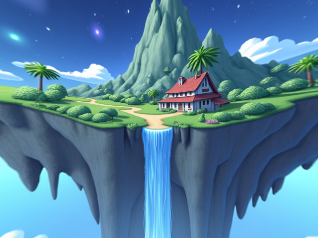
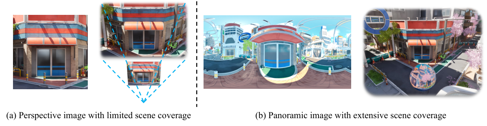
04Target tree
D:\Votion3DGS\ app\ PySide6 engine\ pipeline + workers (subprocess isolation) vendor\splatkit\ core/ + shim/ (MIT, no ComfyUI imports) vendor\moge\ bin\ colmap_sphere.exe .hf_cache\ Hub + Xet cache (install folder the user chose; not C:\Users\…\.cache) models\ ready weights (HF download / Comfy copy) outputs\<scene>\ docs\ these phase plans tools\ download_models.py, model_manifest.json requirements.lock written in Phase 0 — not invented now
05Model files
Filenames and URLs copied from MarkdownNote nodes in
d:\AI_3DGS\260825_MICKMUMPITZ_Krea2-360Pano-Creator_1-0.json and
d:\AI_3DGS\260825_MICKMUMPITZ_3DGS-Dataset-Creator_1-0_SMPL.json.
Sizes are omitted unless a source stated them.
Download into <install_root>\models\. Hub blobs land in <install_root>\.hf_cache\ first, not C:\Users\<user>\.cache\huggingface.
Panorama (Phase 1; downloader can fetch in Phase 0)
| File | Folder | Source |
|---|---|---|
krea2_turbo_fp8_scaled.safetensors | diffusion_models | Comfy-Org/Krea-2 |
krea2_t2i_360_erp_lora_v1.safetensors | loras | Krea2-360-ERP-LoRAs |
krea2_oedit_360_erp_outpaint_lora_v1.safetensors | loras | same repo |
qwen3vl_4b_fp8_scaled.safetensors | text_encoders | Comfy-Org/Krea-2 |
wan_2.1_vae.safetensors | vae | Comfy-Org Wan 2.1 |
RealESRGAN_x2.pth | upscale_models | ai-forever/Real-ESRGAN |
Optional nvfp4 Krea file is for RTX 50xx — not the 3090 Quality default.
Video / dataset (Phase 3)
| File | Folder | Source |
|---|---|---|
Wan2_1-I2V-14B-720P_fp8_e4m3fn.safetensors | diffusion_models | Kijai/WanVideo_comfy |
pano_video_gen_720p_comfy.safetensors | loras | mickmumpitz Pano360 LoRA |
lightx2v_T2V_14B_cfg_step_distill_v2_lora_rank64_bf16.safetensors | loras | Kijai Lightx2v |
umt5_xxl_fp8_e4m3fn_scaled.safetensors | text_encoders | Comfy-Org |
clip_vision_h.safetensors | clip_vision | Comfy-Org |
4x-UltraSharp.pth | upscale_models | Kim2091/UltraSharp |
GGUF Q4 is the workflow’s 16GB option — not the 3090 Quality default, and not the Fast default (Fast = Matrix-3D 5B).
MoGe: Ruicheng/moge-vitl model.pt (Phase 2 subset).
SphereSfM: colmap_sphere.exe with SplatKit’s SHA check — do not invent a hash.
Florence-2 (optional P1 caption): Microsoft Florence-2, Apache-2.0. Exact repo id/revision unknown until first successful P1 install — write it into model_manifest.json. Do not invent a quantized fork.
06VRAM profiles
| Profile | Assumption | WAN | HiRes | Rails |
|---|---|---|---|---|
| Quality (locked) | RTX 3090 24GB | 14B fp8 720p + LightX2V | 8K geometry | 4 |
| Fast | 16GB class | Matrix-3D 5B (default). GGUF Q4 is not the Fast default. | 8K optional | 2–4 |
| Scout | 12GB class | 5B or skip WAN | skip | 1–2 |
Matrix-3D PanoLRM (~80GB in their README) is out of 2.0.
07Visual sources (from Org_Idea.md)
Stills grabbed from the project pages and repos listed in Org_Idea.md. They illustrate the idea — they are not Votion UI mocks.
Selected pipeline (in 2.0)

Evaluated, not selected (stay archived)
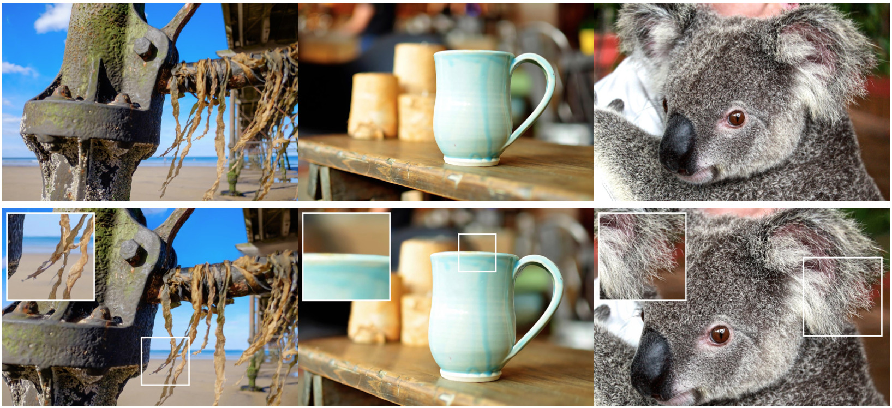
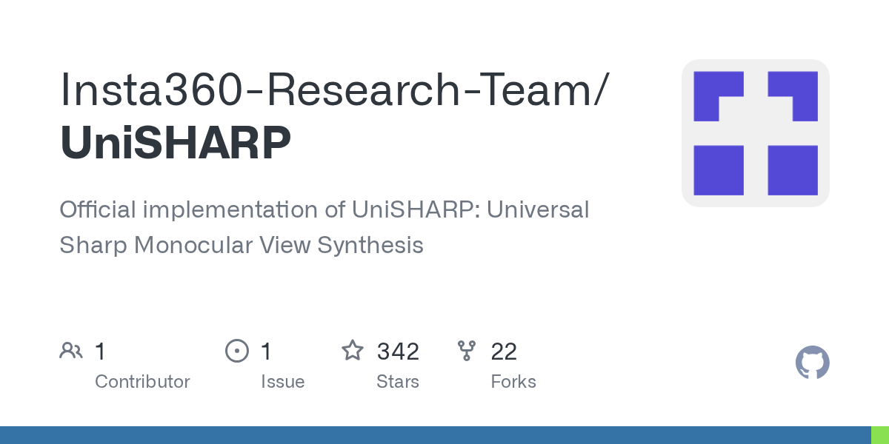
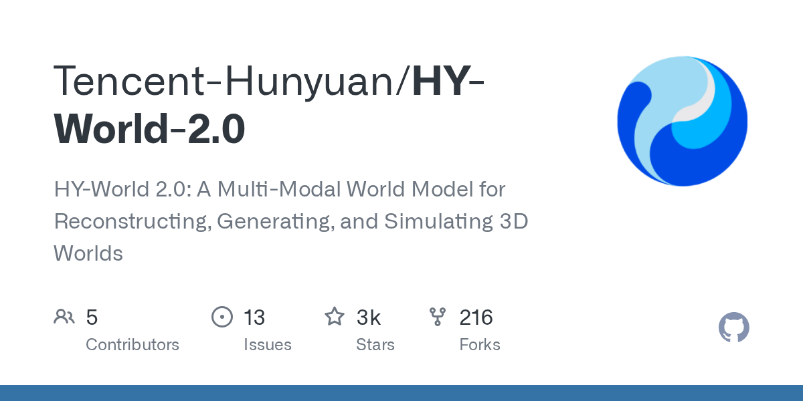
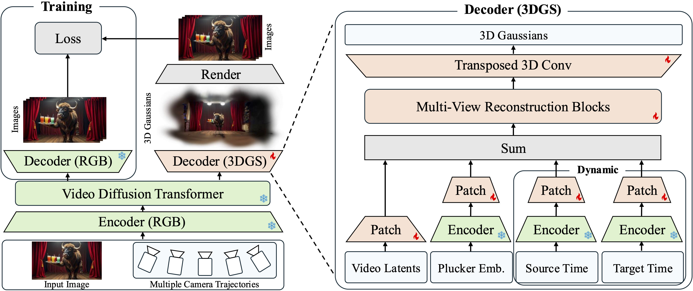
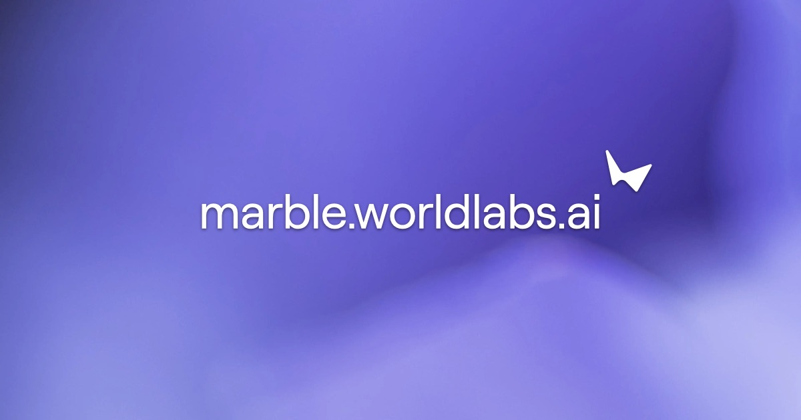
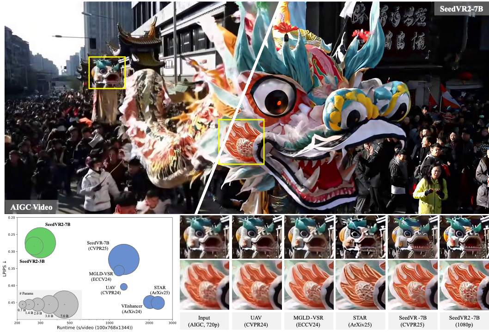
08P5 stretch (not a 2.0 blocker)
- SeedVR2 as an experiment only — video: slow, little gain; not a substitute for 8K reprojection
- Matrix-3D optimization reconstruction as an advanced alternative to SphereSfM
- macOS: SplatKit SphereSfM is Windows/Linux only today